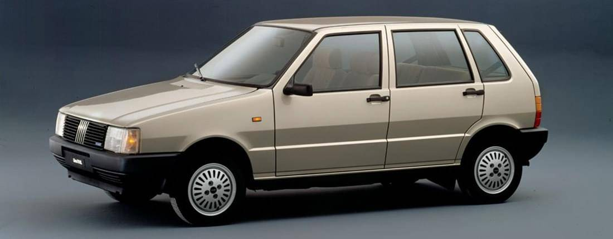
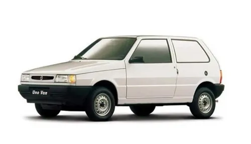
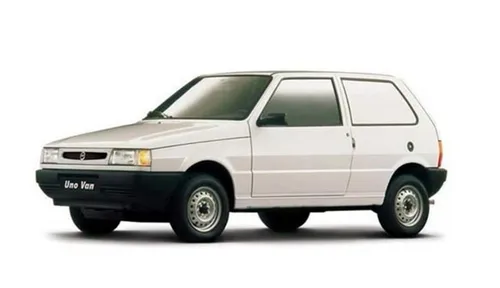
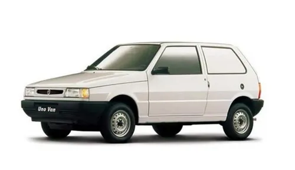

UNO


 


CARACTERÍSTICAS
Diseño: Líneas redondeadas que le dan una apariencia compacta y moderna.
Espacio interior: Materiales plásticos pero con un diseño agradable. Sorprende por el buen espacio para los pasajeros delanteros, a pesar de ser un coche compacto.
Baúl: 280 litros con rueda de auxilio del mismo tamaño que las titulares.
Motorización:
Nafta: Varias opciones a lo largo de los años, como el 1.3 de 60 CV, el 1.5 de 82 CV o el 1.6.
Diésel: Incluía versiones 1.3 de 42 CV y más adelante 1.7 de 60 CV.
Frenos: Delanteros de disco y traseros de tambor.
Interior: comandos satelitales detrás del volante para algunas funciones y un cenicero desplazable ← Volver al catálogo